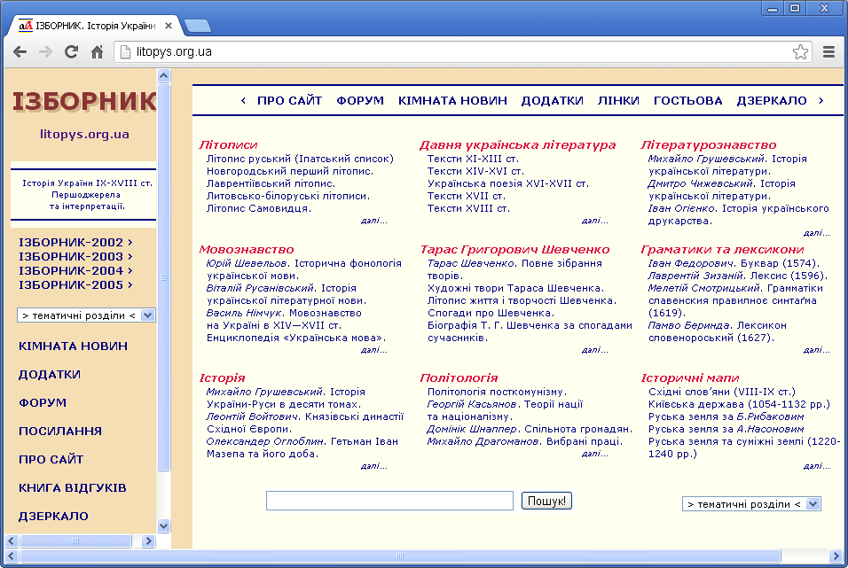

|
Головна | 5 порад | Пошук Інформації | контакти |
|
Пошук Інформації |
|
|
Нині понад 500 мільйонів людей регулярно користуються глобальною мережею. А за два роки їх кількість, на думку експертів, перевищить 1 міліард. Інакше кажучи, становитиме більше ніж 16% населення світу. Таку числену групу споживачів інформації не можна залишити без уваги.
Знайдену в результаті пошуку інформацію обов'язково потрібно проаналізувати. Публікації у глобальній мережі можуть містити застарілу інформацію або навіть помилки. Тому до використання знайденої інформації потрібно з'ясувати:
При використанні матеріалів з Інтернету потрібно дотримуватися вимог авторського права: вказувати персональні дані автора, повну назву й адресу публікації. Розглянемо детально використання спеціальних інструментів пошуку. Добірки посилань використовуються для пошуку інформації з конкретної теми. Вони містять списки посилань на сайти, які у деяких випадках згруповано в рубрики. Автори сайту вручну здійснюють занесення посилань до добірки. Наприклад, для пошуку матеріалів з історії України IX–XVIII століть можна використовувати сайт Ізборник (litopys.org.ua/).  На сайті створено електронну бібліотеку давньої української літератури — добірку електронних документів за даною тематикою: літописи й історичні документи. У верхній частині головної сторінки сайту є посилання на сторінку, яка містить добірку посилань на інші джерела інформації із зазначеного історичного періоду. Пошуковий каталог — це структурований набір посилань на сайти з їх коротким описом. Його використовують для пошуку інформації з різноманітних тем. Його, як і добірку посилань, створюють «руками». Посилання на джерела інформації класифіковано у пошуковому каталозі за темами. Наприклад, освіта, наука, техніка, розваги, подорожі тощо. Кожна з цих тем може бути розбита на підтеми, що дозволяє звужувати область пошуку. Вибравши тему, яка вас цікавить, ви отримуєте перелік посилань на інші сайти, з яких можна розпочинати пошук. Наприклад, при підготовці до предметних олімпіад зазвичай виникає потреба пошуку додаткових матеріалів. Для цього, наприклад, можна скористатися послугами російськомовного Каталогу дитячих ресурсів, який розташовано за адресою http://www.catalog.detkiuch.ru/. Пошукові системи Інтернету використовують такі алгоритми пошуку: простий пошук, розширений пошук та контекстний пошук. Простий пошукПід час цього пошуку у поле запиту вводять одне або декілька слів, які можуть характеризувати зміст документа. Під час введення одного слова машина видає, як правило, велику кількість посилань, з яких обрати потрібну інформацію буває досить складно. Тому простий пошук використовують для знаходження нескладних, однозначних питань чи теоретичних положень. Розширений пошукТакий пошук завжди включає запит із групи слів. Під час розширеного пошуку рекомендують зв’язувати ключові слова логічними операторами and (і), or (або), not (ні) тощо. Зазвичай записи ключових слів і логічних операторів у різних пошукових системах або однакові, або досить схожі. Тому, засвоївши один раз прийоми розширеного пошуку, можна ним користуватися де завгодно, переключивши машину в потрібний режим розширеного пошуку. Контекстний пошукПошукові машини, що підтримують цей вид пошуку, видають посилання на інформацію, яка точно відповідає ключовим словам у пошуковому вікні. Для цього у більшості випадків ключову фразу потрібно взяти в лапки. Пошукові системи та правила пошуку інформаціїЯкщо адресу сторінки з цікавим для нас матеріалом невідомо і сторінки з відповідними посиланнями також немає, доводиться розшукувати матеріали у всьому Інтернеті. У цьому випадку застосовують пошукові системи — спеціальні web-вузли. |
|